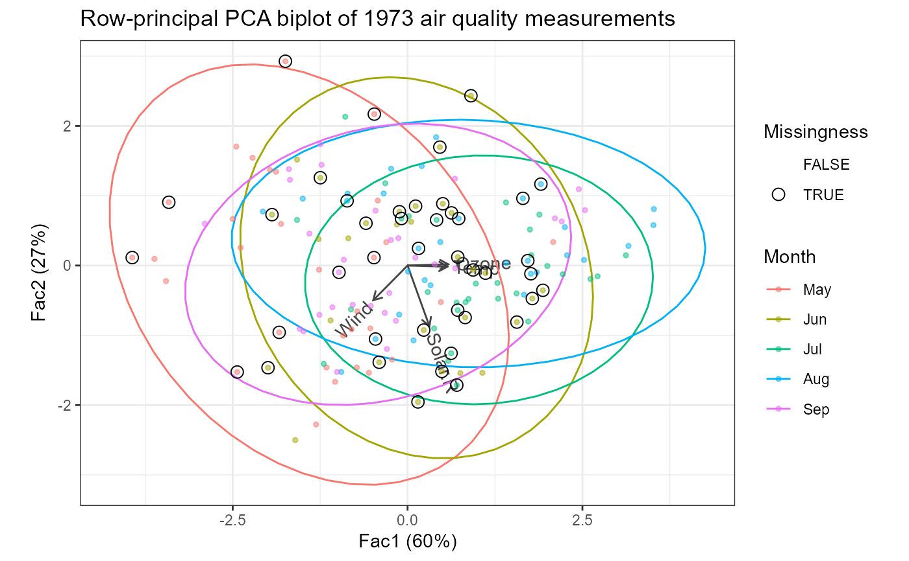

Functionality for non-linear iterative PLS ('nipals') objects
methods-ade4.RdThese methods extract data from, and attribute new data to,
objects of class "nipals" as returned by ade4::nipals().
Usage
# S3 method for class 'nipals'
as_tbl_ord(x)
# S3 method for class 'nipals'
recover_rows(x)
# S3 method for class 'nipals'
recover_cols(x)
# S3 method for class 'nipals'
recover_inertia(x)
# S3 method for class 'nipals'
recover_coord(x)
# S3 method for class 'nipals'
recover_conference(x)
# S3 method for class 'nipals'
recover_aug_rows(x)
# S3 method for class 'nipals'
recover_aug_cols(x)
# S3 method for class 'nipals'
recover_aug_coord(x)Value
The recovery generics recover_*() return core model components, distribution of inertia,
supplementary elements, and intrinsic metadata; but they require methods for each model class to
tell them what these components are.
The generic as_tbl_ord() returns its input wrapped in the 'tbl_ord'
class. Its methods determine what model classes it is allowed to wrap. It
then provides 'tbl_ord' methods with access to the recoverers and hence to
the model components.
See also
Other methods for singular value decomposition-based techniques:
methods-ca-ca,
methods-ca-mjca,
methods-candisc-cancor,
methods-lpca,
methods-nipals-empca,
methods-nipals-nipals,
methods-pma-cca,
methods-pma-spc
Examples
# incomplete air quality measurements from New York
class(airquality)
#> [1] "data.frame"
head(airquality)
#> Ozone Solar.R Wind Temp Month Day
#> 1 41 190 7.4 67 5 1
#> 2 36 118 8.0 72 5 2
#> 3 12 149 12.6 74 5 3
#> 4 18 313 11.5 62 5 4
#> 5 NA NA 14.3 56 5 5
#> 6 28 NA 14.9 66 5 6
if (require(ade4)) {# {ade4}
# NIPALS on air quality measures
airquality[, seq(4L)] %>%
ade4::nipals(nf = 3L) %>%
as_tbl_ord() %>%
print() -> air_nipals
# bind dates and missingness flags to observation coordinates
air_nipals %>%
cbind_rows(airquality[, 5L, drop = FALSE]) %>%
mutate_rows(
Month = factor(month.abb[Month], levels = month.abb),
Missingness = apply(is.na(airquality[, 1:4]), 1L, any)
) ->
air_nipals
# by default, inertia is conferred to rows
get_conference(air_nipals)
# recover observation principal coordinates and measurement standard coordinates
head(get_rows(air_nipals))
get_cols(air_nipals)
# recover inertia in each dimension
get_inertia(air_nipals)
# augment measurements with names and scaling parameters
augment_ord(air_nipals)
# row-principal biplot with monthly ellipses
air_nipals %>%
augment_ord() %>%
ggbiplot() +
theme_bw() +
geom_cols_vector(color = "#444444") +
geom_cols_text_radiate(aes(label = name), color = "#444444") +
stat_rows_ellipse(aes(color = Month)) +
geom_rows_point(aes(color = Month), size = 1, alpha = .5) +
geom_rows_point(aes(shape = Missingness), size = 3) +
scale_shape_manual(values = c(`TRUE` = 1L, `FALSE` = NA)) +
ggtitle("Row-principal PCA biplot of 1973 air quality measurements")
}# {ade4}
#> Loading required package: ade4
#> Warning: package 'ade4' was built under R version 4.3.3
#> # A tbl_ord of class 'nipals': (153 x 3) x (4 x 3)'
#> # 3 coordinates: Fac1, Fac2, Fac3
#> #
#> # Rows (principal): [ 153 x 3 | 0 ]
#> Fac1 Fac2 Fac3 |
#> |
#> 1 -0.305 0.334 -1.25 |
#> 2 -0.426 0.930 -0.501 |
#> 3 -1.27 -0.0592 0.279 |
#> 4 -1.16 -1.46 -1.44 |
#> 5 -3.41 0.906 -0.280 |
#>
#> #
#> # Columns (standard): [ 4 x 3 | 0 ]
#> Fac1 Fac2 Fac3 |
#> |
#> 1 0.582 0.0175 0.104 |
#> 2 0.312 -0.867 -0.374 |
#> 3 -0.491 -0.497 0.623 |
#> 4 0.569 -0.0173 0.679 |
#> Warning: `GeomTextRadiate` is deprecated; use `GeomVector` instead.
#> Warning: Removed 111 rows containing missing values or values outside the scale range
#> (`geom_point()`).
